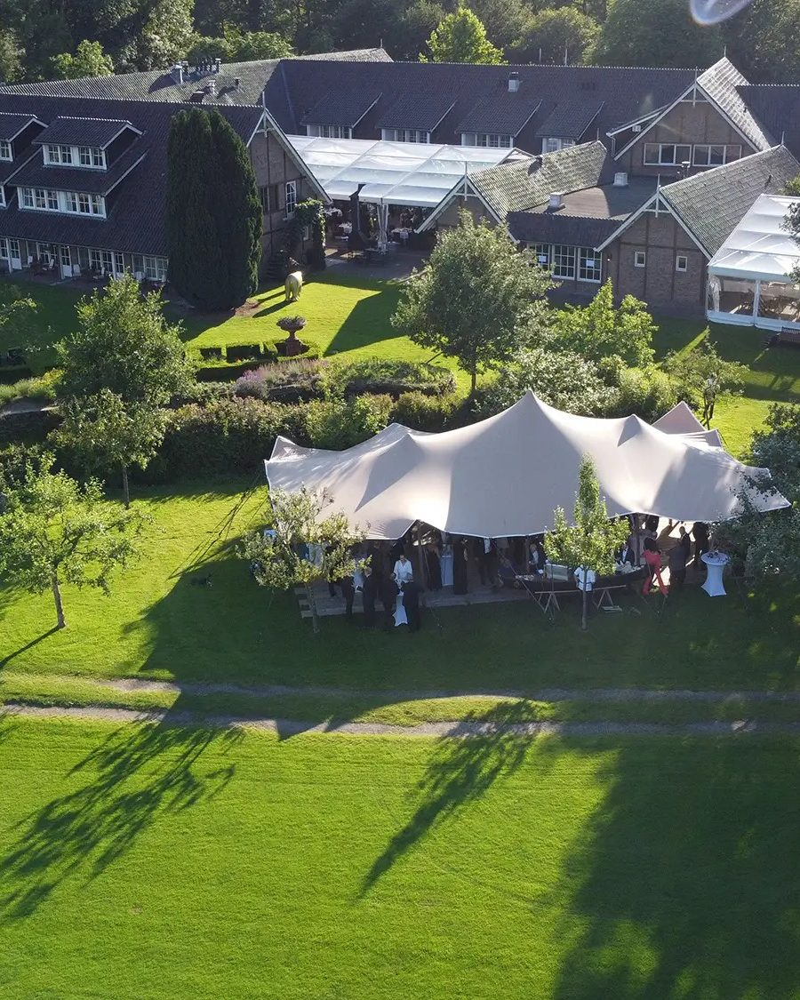
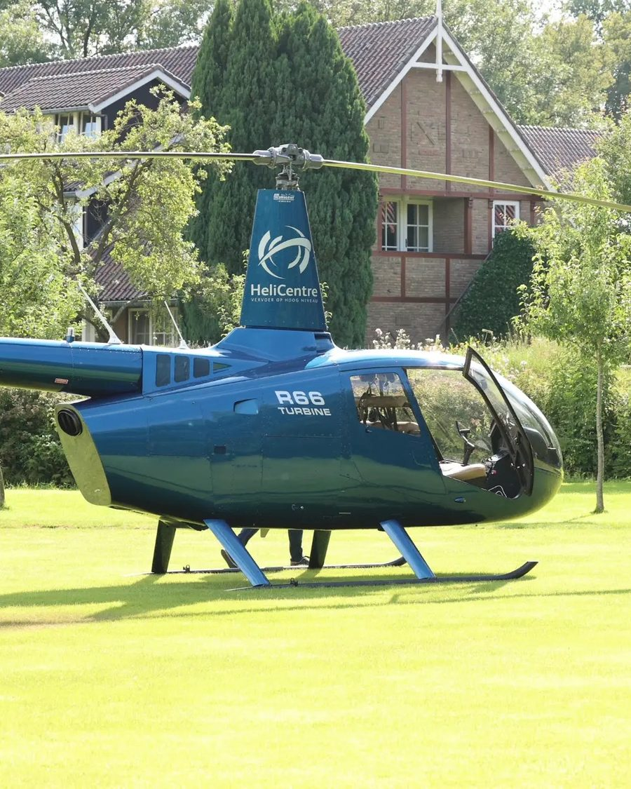
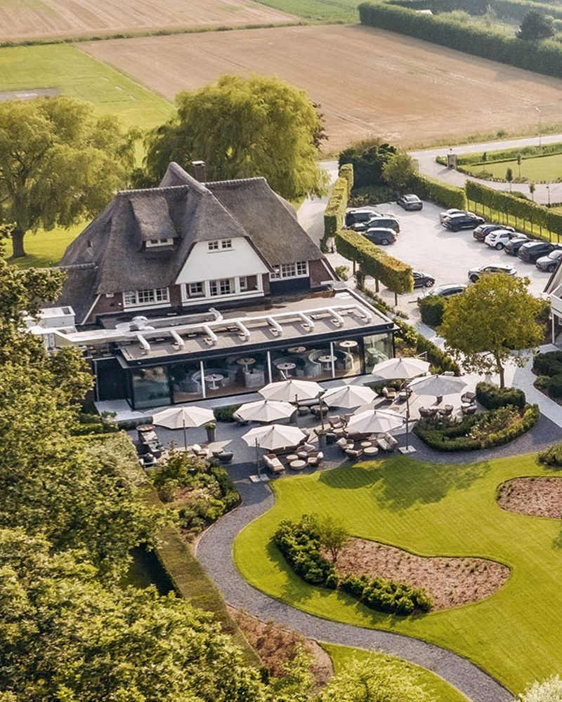

Het eerste culinaire gala voor Alzheimer Nederland
Het veilingboekje
06.10.2026
Grand Ballroom, Hotel Okura Amsterdam. 17 kavels, in een ronde, geveild door Mark Grol.
Het programma
Van ontvangst tot afsluiting
- 17:30
Ontvangst
Aanvang van de avond in de foyer van de Grand Ballroom met champagne en amuses.
- 18:00
Deuren Grand Ballroom geopend
Vanaf dat moment nodigen wij u uit om plaats te nemen aan uw tafel.
- 18:15
Officiële start
U geniet van een 5-gangendiner, bereid door de top Michelinsterrenchefs van Nederland. Tussen de gangen door wordt u meegenomen in prachtige verhalen en verrast met spectaculaire optredens.
- 23:30
Afsluiting
Een stijlvolle afsluiting van een prachtige en waardevolle avond.
Zo werkt de veiling
Vier dingen en u kunt bieden
- 1Bordje omhoog tot de veilingmeester u ziet
- 2Samen bieden met de tafel mag
- 3Bij de hamerslag is het kavel van u
- 4De factuur volgt na de avond

Kavel 1
Net Alsof — VIP-arrangement Jochem Myjer
Een avond rond de show Net Alsof in Koninklijk Theater Carré.
Inclusief
- Vier kaarten in een VIP-loge
- Meet & greet met Jochem Myjer na afloop
- Twee suites in Hotel De L’Europe
- Diner in Trattoria Graziella
- Shuttle van hotel naar theater en terug
Aangeboden doorJochem Myjer, Hotel De L’Europe en Trattoria Graziella

Kavel 2
Koetsentocht langs de Vecht
Een dag langs de Vecht, met Friese paarden voor de koets.
Inclusief
- Koetsentocht van Stalhouderij De Zadelhoff
- Langs de historische buitenplaatsen van de Vecht
- Volledig verzorgde lunch bij De Nederlanden* in Vreeland
Aangeboden doorStalhouderij De Zadelhoff en De Nederlanden*

Kavel 3A
Miniatuur KLM-huisje Rijksmuseum
Een collectors item: de special edition van het Rijksmuseum, één van slechts honderd.
Inclusief
- Miniatuur KLM-huisje, special edition Rijksmuseum
- Private rondleiding door het Rijksmuseum
- Volledig verzorgde lunch bij Restaurant Rijks*
Aangeboden doorKLM, Rijksmuseum en Restaurant Rijks*

Kavel 3B
Miniatuur KLM-huisje Hotel Okura Amsterdam
Het huisje van het huis waar we vanavond te gast zijn — ook één van honderd.
Inclusief
- Miniatuur KLM-huisje, special edition Hotel Okura Amsterdam
- Overnachting in een Royal of President Suite
- Diner in Ciel Bleu**
Aangeboden doorHotel Okura Amsterdam

Kavel 4
De Burgemeester × Moët & Chandon en The House of Caviar
Sander en Anne Spruit van sterrenrestaurant De Burgemeester koken bij u thuis.
Inclusief
- Volledig verzorgd 4-gangendiner voor 10 personen
- Bijpassende wijnen
- Champagneproeverij van Moët & Chandon
- Kaviaarproeverij van The House of Caviar
Aangeboden doorDe Burgemeester*, Moët & Chandon en The House of Caviar
Kavel 5
Overnachten met uitzicht op de luipaarden
Een nacht in Huize Welgelegen in ARTIS — vanuit de masterbedroom zicht op de luipaarden.
Inclusief
- Overnachting voor 6 personen
- Privérondleiding door ARTIS
- Twee dagen toegang tot ARTIS, het Groote Museum en Micropia
- Culinaire avond van Het Amsterdammertje*
Aangeboden doorARTIS en Restaurant Het Amsterdammertje*

Kavel 6
Taxirit in een Porsche 911 GT3 Cup
De snelste taxirit van uw leven: ruim 500 pk over het circuit van Zandvoort.
Inclusief
- Rit in een Porsche 911 GT3 Cup, naast een ervaren coureur
- Circuit Zandvoort, voor 4 personen
- Volledig verzorgde lunch bij De Bokkedoorns** in de duinen
Aangeboden doorB&R Motorsport en De Bokkedoorns**

Kavel 7
Diner bij Da Vinci* met privé-optreden
Aan tafel bij Margo Reuten en Petro Kools in Maasbracht.
Inclusief
- Volledig verzorgd diner bij Da Vinci* voor 10 personen
- De mooiste wijnen uit de kelder
- Miniconcert van de Limburgse tenor Ivo van der Bijl
Aangeboden doorRestaurant Da Vinci* en Ivo van der Bijl

Kavel 8
Tafel op de black-tie VIP Night van MASTERS EXPO
Yveske’s Kitchen tijdens de legendarische VIP Night van het 25-jarige MASTERS EXPO.
Inclusief
- Eigen tafel voor 10 personen, black tie
- Champagne en kaviaar
- Viergangendiner van chefs met samen 41 Michelinsterren
- Live muziek en ontmoetingen met de topchefs
Aangeboden doorMASTERS EXPO

Kavel 9
Champagnelunch bij Aan de Poel**
Aan tafel bij Stefan van Sprang en Robert Veuger in Amstelveen.
Inclusief
- Proeverij van Moët & Chandon
- Volledig verzorgde 5-gangenlunch voor 10 personen
- Champagne en mooie wijnen
Aangeboden doorAan de Poel** en Moët & Chandon




Kavel 10
Per helikopter van De Bloemenbeek naar Inter Scaldes
Van Twente naar Zeeland — per helikopter, tussen twee sterrenrestaurants.
Inclusief
- Twee suites in Landhuishotel De Bloemenbeek*
- Volledig verzorgd sterrendiner en ontbijt
- Helikoptervlucht naar Zeeland
- Landing in de tuin van Inter Scaldes** voor de lunch
Aangeboden doorDe Bloemenbeek* en Inter Scaldes**

Kavel 11
Aan tafel met de oud-hoofdredacteur van Michelin Benelux
Aan tafel met Werner Loens, oud-hoofdredacteur van Michelin Benelux.
Inclusief
- Volledig verzorgd 6-gangendiner met champagne bij Merlet*
- Zijn verhalen uit de wereld van Michelin
- Suite en ontbijt in Hotel Merlet
Aangeboden doorHotel Restaurant Merlet*

Kavel 12
Legends Lounge — PSV × Atlético Madrid
Het Champions League-duel in het Philips Stadion vanuit de Legends Lounge.
Inclusief
- Twee plaatsen in de Legends Lounge
- PSV-legendes aan tafel
- Four-handsdiner van Adrian Zarzo (Zarzo*) en Begoña Rodrigo (La Salita*)
Aangeboden doorLegends Lounge en Restaurant Zarzo*

Kavel 13
Legends Lounge — PSV × Atlético Madrid
Dit kavel wordt twee keer geveild — dit is de tweede.
Inclusief
- Twee plaatsen in de Legends Lounge
- PSV-legendes aan tafel
- Four-handsdiner van Adrian Zarzo (Zarzo*) en Begoña Rodrigo (La Salita*)
Aangeboden doorLegends Lounge en Restaurant Zarzo*
Kavel 14
Het Biertafelboek van Govert de Roos
Een gelimiteerde, genummerde Collectors Box van topfotograaf Govert de Roos.
Inclusief
- Nooit eerder gepubliceerd archiefwerk
- Voucher voor drie zelfgekozen prints
- Gesigneerd en met certificaat van authenticiteit
Aangeboden doorGovert de Roos

Kavel 15
Champions Lounge — Ajax op topniveau
Ajax vanuit de meest prestigieuze skylounge van de Johan Cruijff ArenA.
Inclusief
- Champions Lounge, volledig verzorgd arrangement
- 4-gangen sterrendiner
- Analyse van Sjaak Swart en Ronald de Boer
- VIP-parkeren
- ’t Huys Suite in Hotel De L’Europe
Aangeboden doorChampions Lounge en Hotel De L’Europe

Kavel 16
Collector’s edition — Ramses Shaffy
Een groot koffietafelboek vol archiefstukken, handgeschreven teksten en foto’s van Ramses Shaffy, samengebracht als een omgekeerde schoenendoos aan herinneringen. Oplage 500 stuks.
Aangeboden doorUitgeverij Komma
Dank dat u meebiedt
De volledige opbrengst van de veiling gaat naar Alzheimer Nederland, met bijzondere aandacht voor dementie op jonge leeftijd. Samen zorgen we ervoor dat niemand wordt vergeten.
Stichting Vergeet Mij Niet Gala · Wittevrouwensingel 1, 3581 GA Utrecht · vergeetmijnietgala.nl